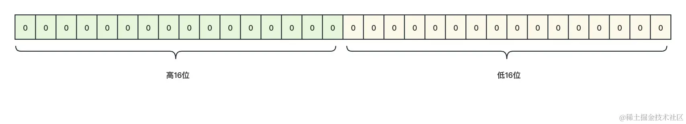
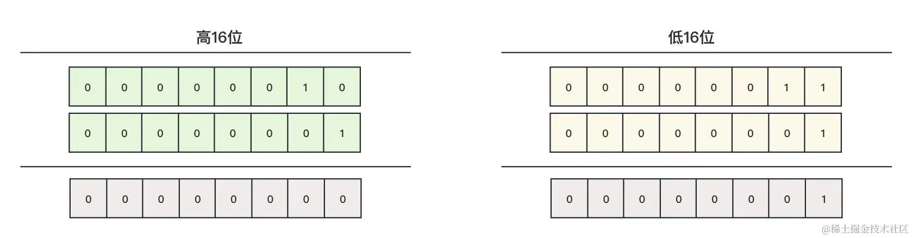
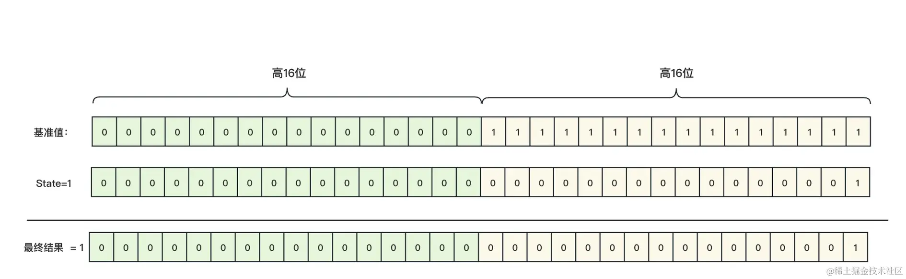
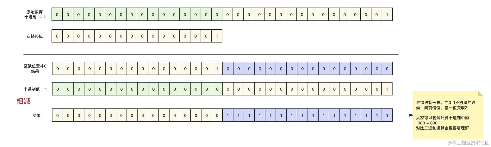
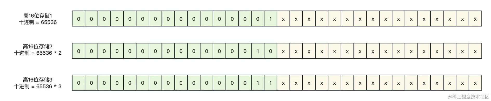
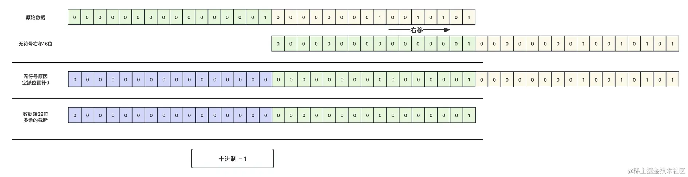
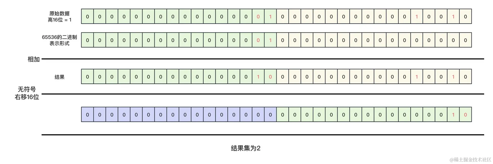
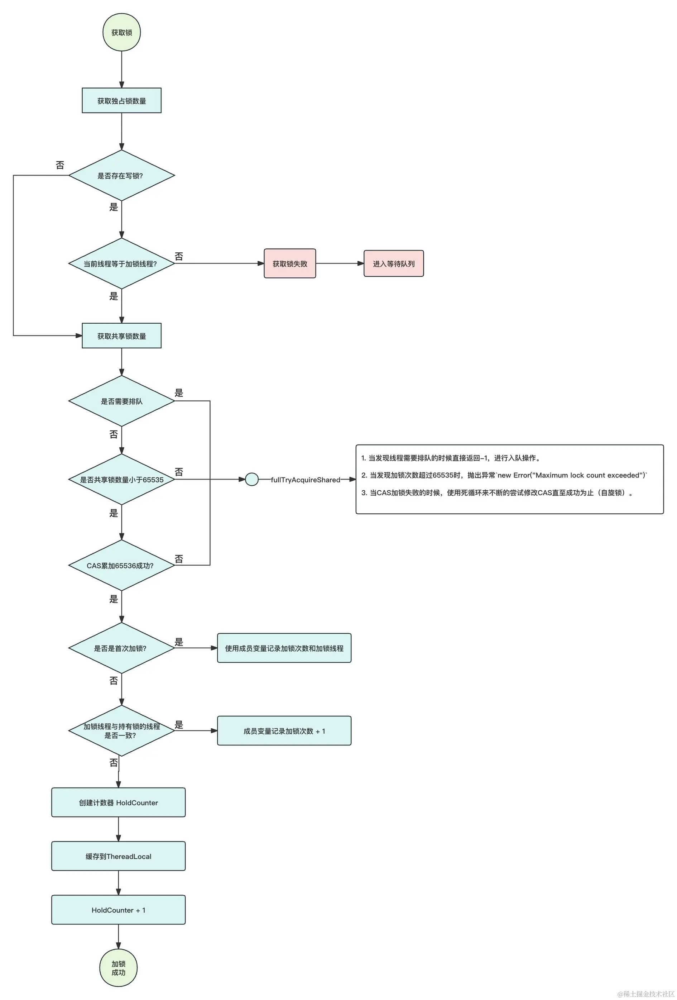
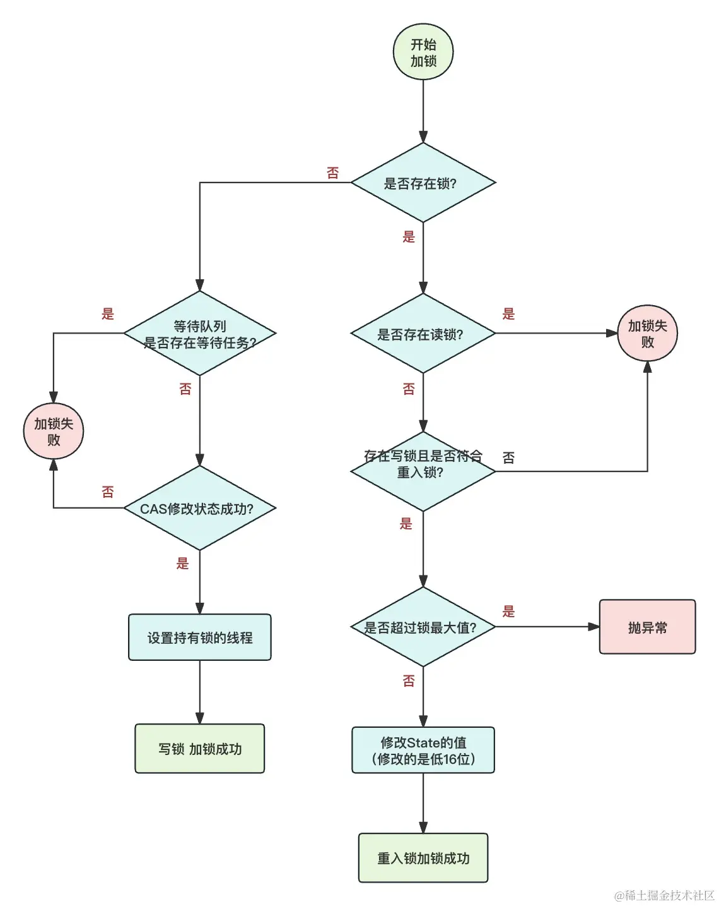

- 01 多线程初阶：解谜多线程世界.md.html
- 02 线程池掌故：管理并发的秘籍.md.html
- 03 锁的奥秘：synchronized 的秘密.md.html
- 04 锁的奥秘：Lock 接口的秘密.md.html
- 05 控制并发流程，并发的巧妙编织.md.html
- 06 ThreadLocal 之珍宝：线程的隐秘宝库.md.html
- 07 CAS：比肩而立的原子魔法.md.html
- 08 容器的魔力：并发世界的宝库.md.html
- 09 结果如何？线程的秘密告白.md.html
- 10 AQS：保证并发安全的终极奥秘（上）.md.html
- 11 AQS：保证并发安全的终极奥秘（中）.md.html
- 12 AQS：保证并发安全的终极奥秘（下）.md.html
- 捐赠
12 AQS：保证并发安全的终极奥秘（下）
我们在前几节课中学习了 ReentrantLock 或者 CountDownLatch 的 AQS 应用原理，本节将继续学习相比前两种稍微复杂一点的 ReentrantReadWriteLock。
它相对复杂的原因有以下几点：
- ReentrantReadWriteLock 存在两种锁的形式，独占锁和共享锁，我们需要对独占锁和共享锁分别进行分析。
- ReentrantReadWriteLock 在应用 AQS 的时候，相对于前几节课对于 state 的应用上，ReentrantReadWriteLock 使用一个 state 值维护了独占锁和共享锁两种形式。
在本节课中，我们还是以 ReentrantReadWriteLock 中更为好理解的公平锁作为切入点进行深入分析。
一、前期准备
刚刚我们在上面说过，ReentrantReadWriteLock 使用一个 state 维护了两个状态。在学习之前，我们需要先去学习如何使用一个 32 位的 int 值来表示两种状态，主要是对于 Java 位运算的知识点。
我们前几节课了解到，AQS 中 state 主要是为了记录加锁的次数或者计数次数，但是在 ReentrantReadWriteLock 中存在读锁（共享锁）和写锁（独占锁）两种，那么此时只有一个 state 肯定是无法满足的，因为 state 是一个 int 值，我们知道 int 在 Java 占 32 位字节，所以我们考虑将 32 位分为高 16 位和低 16 位，如下图所示：

我们可以使用高 16 位存储共享锁，低 16 位存储独占锁，这 32 位最终表示为 10 进制就是一个数字，比如上图表示的就是 0。
那么我们如何计算来单独获取到共享锁或者独占锁的数值呢？
1. 获取独占锁的数量级
在 Java 中存在一种位运算 & 运算，这种运算模式下，它将两个操作数的每个对应位进行与运算，如果两个对应位都是 1，则结果位为 1，否则为 0，运算顺序如下图所示：

上图就是 & 运算的过程，只有全为 1，最终结果才为 1，如果我们使用低 16 位存储独占锁，那么独占锁的最大数量是低 16 位全部为 1 也就是 65535。
我们假设使用一个低 16 位全部都是 1 的二进制与 state 作 & 运算，那么我们是不是就能够得到低 16 位的数值呢？
可能没有了解过位运算的同学会懵，没关系，我们用图来表示：

也就是说，只要通过低 16 位全是 1 的值与 state 进行 & 运算，我们就能得到低 16 位的值，当然因为 16 位数据最大只能表示 65535，所以如果 state 的值大于 65535，那么计算就会出问题。所以，我们需要规定，独占锁的数量必须小于等于 65535！
我们看一下，ReentrantReadWriteLock 计算独占锁的规则，先不要管代码在哪里，后面会统一说明：
static final int SHARED_SHIFT = 16;
//得出的结果就是65535 低16位全为1
static final int EXCLUSIVE_MASK = (1 << SHARED_SHIFT) - 1;
static int exclusiveCount(int c) {
return c & EXCLUSIVE_MASK;
}
我们简单说明一下 EXCLUSIVE_MASK 的运算方式，<<这个符号就是左移运算符，目的是将一个数据向左边移动 16 位，空缺位置补 0，然后再进行 -1 操作。

注意，因为这个不是本节课的重点，这里的位运算只是为了让新手更加容易理解，事实上进行 -1 操作的时候，二进制运算中会转换为（xxx + -1）来进行运算，这涉及到了补码的知识点。如果大家想学习，可以在网上查找资料学习，这里不做太多的讲解。
在上述的代码中，c 就是 state，而 EXCLUSIVE_MASK 就是基准值（低 16 位全为 1 的数据），通过 state 与基准值进行位运算，我们就能够得到低 16 位的值，也就是独占锁的数量值。
2. 获取共享锁的数量级
我们上文说到 state 采用了低 16 位来存储了独占锁，所以从 0 ~ 65535 的数据位置已经被独占锁全部占用，所以高 16 位存储共享锁就需要从 65536 来计算，也就是在二进制中至少需要第 17 位也就是高 16 位的最后一位存在数据才能存储共享锁的数量级。
如图所示，我们分别表示共享锁的数量为 1、2、3：

从上图可以看到，如果我们想要获取高 16 存储的实际的数值，需要将低 16 位的干扰排除掉，然后计算就能得到十进制的数据，所以我们需要用到另外一个计算符 >>>，这个符号在 Java 中可以将二进制数据无符号右移，缺少的位置补充为 0，如图所示：

我们通过无符号右移 16 位，就能够完全抛弃掉低 16 位对我们运算的影响，从而达到计算共享锁数量级的目的。
如果我们想要对高 16 位进行 +1 操作呢？此时因为我们操作的是高 16 位，所以直接对 state + 1 是不行的，每一次对高 16 位 +1 都需要在实际的十进制中增加 65536 的数值。
依旧是使用一张图来证明演算过程，我们现在对高 16 位进行 +1 操作：

至此，我们学习了，如果想要计算高 16 位的值，需要将数据无符号右移 16 位来得到共享锁的数量级；如果想对当前共享锁的数量级数量 +1 ，则需要对 state + 65536。
我们来看下 ReentrantReadWriteLock 对这个的应用。
获取共享锁的数量级：
static final int SHARED_SHIFT = 16;
static int sharedCount(int c) {
return c >>> SHARED_SHIFT;
}
可以看到，这里计算共享锁数量级方法的过程是计算高 16 位，计算过程与我们上文分析的一致。
对共享锁的数量级 +1 操作：
static final int SHARED_SHIFT = 16;
static final int SHARED_UNIT = (1 << SHARED_SHIFT);
compareAndSetState(c, c + SHARED_UNIT)
这里可以看到，对于共享锁的数量级的修改是直接使用 CAS 修改为当前的 state + 65536，计算过程与我们上文说的一致。
二、源代码分析
至此，我们已经学习了在 ReentrantReadWriteLock 中如何通过一个 state 来维护两个锁的数量值，我们来分别分析一下共享锁和独占锁的加解锁的过程。
这里还是以公平锁为例进行分析，非公平锁你在闲暇之余可以根据这几章的所学来分析一下。
1. 读锁的加解锁
（1）加锁
直接进入到 java.util.concurrent.locks.ReentrantReadWriteLock.Sync#tryAcquireShared，源码的寻找过程跟前几章的寻找过程一致：
protected final int tryAcquireShared(int unused) {
//获取当前的线程
Thread current = Thread.currentThread();
//获取当前的state的值
int c = getState();
//判断是否存在独占锁
if (exclusiveCount(c) != 0 &&
getExclusiveOwnerThread() != current)
return -1;
//获取共享锁
int r = sharedCount(c);
//是否需要排队等动作 共享锁的数量是否小于65535 cas修改高16位是否成功
if (!readerShouldBlock() &&
r < MAX_COUNT &&
compareAndSetState(c, c + SHARED_UNIT)) {
//首次加锁
if (r == 0) {
//记录首次的线程 （优化）
firstReader = current;
//首次线程的加锁数量级 （优化）
firstReaderHoldCount = 1;
} else if (firstReader == current) {
//如果还是首个线程 则直接累加，此时还没有竞争呢
firstReaderHoldCount++;
} else {
//存在线程竞争 则使用ThreadLocal缓存一个HoldCounter加锁的计数器
HoldCounter rh = cachedHoldCounter;
if (rh == null || rh.tid != getThreadId(current))
cachedHoldCounter = rh = readHolds.get();
else if (rh.count == 0)
readHolds.set(rh);
//计数器累加操作
rh.count++;
}
return 1;
}
//当上面共享锁加锁失败，则开始循环迭代加锁
return fullTryAcquireShared(current);
}
有了前面的知识其实很好理解这段代码，我们在学习 ReentrantReadWriteLock 的时候学习过它的特性，读写锁存在互斥性，即读锁和写锁不能同时共存，所以首先需要根据位运算来计算低 16 位是否存在写锁，如果存在直接加锁失败，如果不存在则继续。
在确认此时没有写锁后，根据位运算计算高 16 位的读锁的数量，当判断不需要排队和读锁的数量不超过 65535 并且 CAS 修改成功的情况下，开始执行读锁的加锁逻辑，主要有以下几个步骤：
- 如果读锁数量级为 0，则证明只有一个线程在获取锁，此时不存在锁竞争问题，所以直接通过维护 firstReader、firstReaderHoldCount 这两个变量来记录持有锁的线程和读锁的数量级，而不是使用 ThreadLocal 来记录。这样可以提高效率，因为 ThreadLocal 效率虽然高，但是依旧会损失一部分性能。
- 当读锁数量级不为 0，则证明此时可能不止一个线程在持有读锁，于是先判断是否是可重入锁的情况，如果是可重入锁，证明此时还不存在锁竞争问题，所以依旧使用 firstReaderHoldCount 来记录加锁次数，以保证重入锁的功能正确性。
- 当读锁数量级不为 0 且不是重入锁的情况下，证明此时一定存在锁竞争问题，于是开始对每一个线程使用 ThreadLocal 来单独记录一个加锁计数器，从而保证某一个线程重入锁的获取次数的正常计算。
fullTryAcquireShared 方法主要是进行兜底的操作，当发现线程需要排队、加锁次数超过 65535、CAS 加锁失败的时候进行兜底，内部工作机制如下：
- 当发现线程需要排队的时候直接返回 -1，进行入队操作。
- 当发现加锁次数超过 65535 时，抛出异常
new Error("Maximum lock count exceeded")。 - 当 CAS 加锁失败的时候，使用死循环来不断地尝试修改 CAS 直至成功为止（自旋锁）。
我们使用一个流程图来描述整个过程：

总结来说，共享锁的加锁逻辑就是先判断是不是存在写锁，存在写锁就直接加锁失败入队，不存在就加锁成功并修改 state 的高 16 位数据，并在每一个线程维护一个计数器，来计算每一个线程加锁的次数。
（2）解锁
共享锁的解锁比较简单，解锁过程简单来说无非就是将累加器中的累加次数 -1，同时将 state 中的高 16 位 -1（state - 65536），然后再通知等待队列中的任务进行解除阻塞。
源码位置：java.util.concurrent.locks.AbstractQueuedSynchronizer#releaseShared。
public final boolean releaseShared(int arg) {
if (tryReleaseShared(arg)) {
doReleaseShared();
return true;
}
return false;
}
这里我们还是分两部分进行解析 tryReleaseShared 和 doReleaseShared。
tryReleaseShared
java.util.concurrent.locks.ReentrantReadWriteLock.Sync#tryReleaseShared
protected final boolean tryReleaseShared(int unused) {
Thread current = Thread.currentThread();
//如果当前解锁线程是首个加锁的线程，证明没有竞争直接修改局部变量即可
if (firstReader == current) {
if (firstReaderHoldCount == 1)
firstReader = null;
else
firstReaderHoldCount--;
} else {
//存在竞争 直接修改ThreadLocal中的累加器
HoldCounter rh = cachedHoldCounter;
if (rh == null || rh.tid != getThreadId(current))
rh = readHolds.get();
int count = rh.count;
if (count <= 1) {
readHolds.remove();
if (count <= 0)
throw unmatchedUnlockException();
}
--rh.count;
}
for (;;) {
int c = getState();
int nextc = c - SHARED_UNIT;
//使用CAS修改数据 CAS修改失败则开始自旋修改，直至修改成功
if (compareAndSetState(c, nextc))
//重入锁的情况下，加锁次数减少一次不会为0
return nextc == 0;
}
}
正如我们前面分析的，解锁逻辑总共就做了两件事：
- 修改累加器，如果累加器为 1，则直接删除，证明该线程不再持有共享锁。
- 使用自旋的方式 CAS 修改 state 的值。
我们在这一步也就基本上了解了，有一部分同学在学习加锁的时候疑惑的 HoldCounter 的意义，它就是为了记录某一个线程的加锁次数，以方便在后续解锁的时候，释放重入锁进行计数。HoldCounter 与 state 不同的是，HoldCounter 记录的是单个线程持有读锁的次数，而 state 记录的是整个锁的状态，包括共享锁的持有次数和排他锁的持有信息。
doReleaseShared
在上一步释放锁成功后，会尝试将等待队列中的任务进行唤醒，具体方法如下：
java.util.concurrent.locks.AbstractQueuedSynchronizer#doReleaseShared
private void doReleaseShared() {
for (;;) {
//获取头节点
Node h = head;
if (h != null && h != tail) {
int ws = h.waitStatus;
if (ws == Node.SIGNAL) {
//初始化状态waitStatus为0
if (!compareAndSetWaitStatus(h, Node.SIGNAL, 0))
continue;
// 将head节点的下一个节点解除阻塞
unparkSuccessor(h);
}
else if (ws == 0 && !compareAndSetWaitStatus(h, 0, Node.PROPAGATE))
continue;
}
if (h == head)
break;
}
}
这一块代码主要的作用就是将 head 节点后面的节点调用 unPark 方法进行解除阻塞，以达到让等待队列中的任务能够继续执行的目的。
这里我们将共享锁（读锁）的加解锁做了一个详细的介绍，事实上，它的加解锁方式与 ReadWriteLock 的根本区别就是对于共享锁的加锁，在没有写锁的情况下，会直接加锁成功，同时在 state 中维护读锁的加锁数据。存在写锁，则直接加锁失败入队。
2. 写锁的加解锁
我们在上文详细学习了读锁的加解锁操作，下面我们开始正式分析写锁的加解锁的操作。
（1）加锁
代码位置在：java.util.concurrent.locks.AbstractQueuedSynchronizer#acquire。
public final void acquire(int arg) {
if (!tryAcquire(arg) &&
acquireQueued(addWaiter(Node.EXCLUSIVE), arg))
selfInterrupt();
}
这里可以看到，它的加锁方式与 ReentrantLock 一样，我们只需要重点关注 tryAcquire 方法在 ReentrantReadWriteLock 中的实现就行了，其他方法在前面分析过，不再重复讲解。
先思考一下，如果是你，你该对写锁如何加锁？
首先，它是一个独占锁，所以我们需要先判断 state 的低 16 位是不是已经存在独占锁了，如果已经存在独占锁了，那么我们就需要判断是不是重入锁！如果 state 中已经存在独占锁了，而且也不是重入锁，那么直接加锁失败，将任务放到任务队列中就可以了。
其次，如果没有独占锁，因为 16 位字节的限制，所以独占锁的限制不能超过 65535 个，如果超过了就直接报错。
然后在既没有独占锁占用又没有超过最大值的情况下，我们直接就 state + 1，然后返回加锁成功就可以了。
那么，我们一起来看一下源码中是如何做的。
源码位置：java.util.concurrent.locks.ReentrantReadWriteLock.Sync#tryAcquire。
protected final boolean tryAcquire(int acquires) {
//获取当前的线程
Thread current = Thread.currentThread();
//获取当前State的值
int c = getState();
//计算低16位的值
int w = exclusiveCount(c);
//如果 state!=0 证明state存在读锁或者写锁
if (c != 0) {
//如果w = 0 证明State中存在读锁 不存在写锁，读写不能共存，所以直接加锁失败
//如果w != 0 这个名State中存在写锁，此时需要判断是不是重入锁，不是重入锁也直接失败
if (w == 0 || current != getExclusiveOwnerThread())
return false;
//如果没有读锁，那么判断写锁数量是否超过最大值，超过直接报错
if (w + exclusiveCount(acquires) > MAX_COUNT)
throw new Error("Maximum lock count exceeded");
//经过上面的判断，这里就符合w!=0 而且符合重入锁的规则，直接向上累加加锁次数就可以了
setState(c + acquires);
return true;
}
//如果state == 0 证明即不存在写锁也不存在读锁，此时需要判断等待队列中是否存在任务，不存在而且CAS能够修改成功就返回加锁成功，否则加锁失败
if (writerShouldBlock() ||
!compareAndSetState(c, c + acquires))
return false;
setExclusiveOwnerThread(current);
return true;
}
从代码注释中可以看到，代码中的设计原理与我们之前设想的基本一致。还是老规矩，我们使用一张流程图来说明问题：

（2）解锁
了解了写锁的加锁步骤之后，解锁步骤能猜出来：
- 将 state - 1；
- 判断当前 state 的写锁数量，如果为 0 的话证明重入锁释放完毕，直接将加锁线程置空，并解锁成功。
猜测完毕后，我们来看实际的源码。
源码位置：java.util.concurrent.locks.AbstractQueuedSynchronizer#release。
public final boolean release(int arg) {
if (tryRelease(arg)) {
Node h = head;
if (h != null && h.waitStatus != 0)
unparkSuccessor(h);
return true;
}
return false;
}
同样的，代码我们都分析过，我们这里只重点分析 tryRelease。
源码位置：java.util.concurrent.locks.AbstractQueuedSynchronizer#tryRelease。
protected final boolean tryRelease(int releases) {
//判断解锁线程是不是加锁线程 不是就直接报错
if (!isHeldExclusively())
throw new IllegalMonitorStateException();
//state - 1
int nextc = getState() - releases;
//判断重入锁是否解锁成功
boolean free = exclusiveCount(nextc) == 0;
if (free)
//加锁线程置空
setExclusiveOwnerThread(null);
//cas设置state
setState(nextc);
return free;
}
可以看到，与我们的猜测基本一致，比较简单，这里不再画图说明。
三、总结
本节课我们从源码角度学习了 ReentrantReadWriteLock 的写锁和读锁的加解锁原理，也从源码角度上说明了 ReentrantReadWriteLock 是如何通过 AQS 中一个 state 来控制两个锁的状态的。通过这一节课的学习，我们也了解到了读写锁互斥、写锁互斥的原理，相当于对我们前面的所学做了一个验证！
大家闲下来的时候，也可以自己分析一下非公平锁的源码，看看你是否已经搞明白 ReentrantReadWriteLock 对于 AQS 的使用！
© 2019 - 2023 Liangliang Lee. Powered by gin and hexo-theme-book.